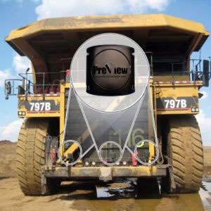

Extreme Environments Call for Reliable Safety Solutions
With trucks measuring over 40’ (12.5m) long, 25’ (7.5m) wide and 18’ (5.5m) high, the blind zones on mining equipment are potentially immense—some vehicles can even have full 360° blind zones. PRECO provides solutions that utilize a combination of PRECO’s PreView® Xtreme radar, PreView Sentry® radar, and PreView Plus camera/monitor system in order to help eliminate costly collisions and vehicle downtime.
Learn More
